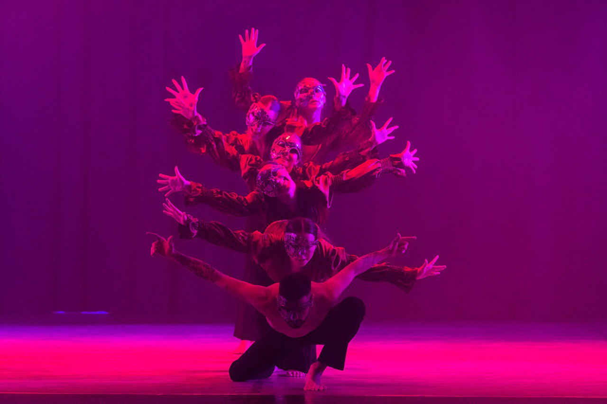
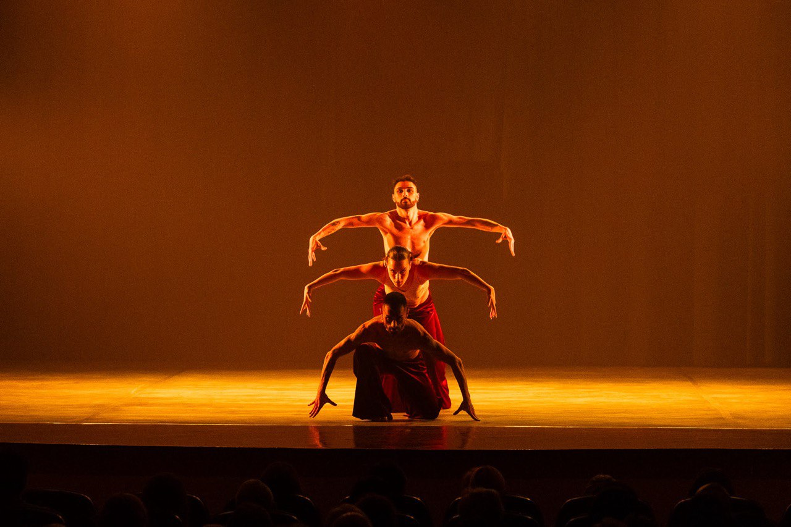
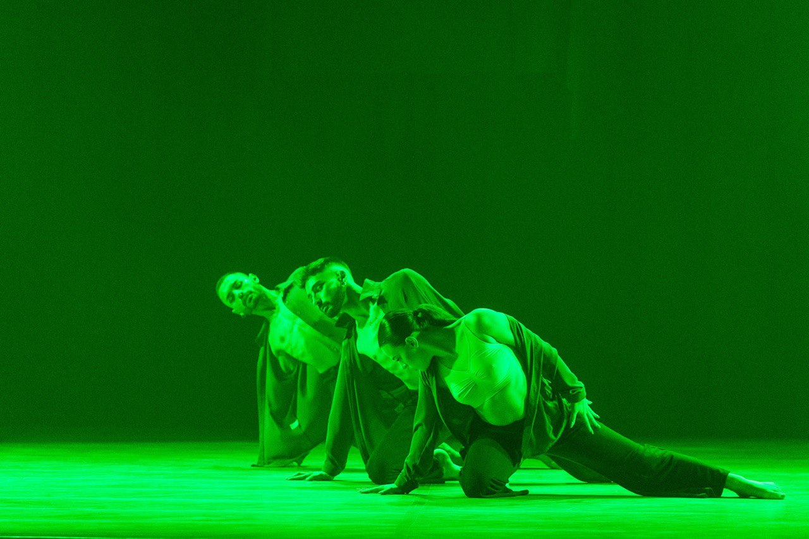

N.S.D SCHOOL ACCADEMY nasce con l’ idea di dare ai giovani talenti e artisti un nuovo format di studio, dato dall’ esperienza internazionale e dall’unione di realtà reali e future per i giovani artisti, con la direzione artistica del coreografo Lino Villa.

Composizione del corso
Il corso è composto da 35 ore settimanali dal lunedì al sabato di formazione (150 ore mensili di studio,
1350 annue di preparazione.)
Un esempio qui sotto del primo anno di corso:

*Per visualizzare gli orari di questo anno si può consultare la pagina dedicata
Per il 2° e 3° anno, si introdurrà:
• Canto
• Luminotecnica
• Drammaturgia
• Flamenco
• Composizione coreografica

Certificazioni ed esami
Un percorso accademico triennale con certificazione europea, CONI e LIBERTAS, più 2 anni di specialistica
all’interno della compagnia “EVENTI IN DANZA”.
Verrà rilasciato annualmente un attestato riconosciuto dal
CONI di livello, alla fine del percorso quinquennale verrà rilasciato un tesserino tecnico e un patentino di
insegnante di danza con qualifica europea riconosciuta dal CONI.
Durante gli anni accademici verrà fatto un primo esame di sbarramento dopo 5 mesi di studio ed un esame
finale
per accedere all’anno successivo.
Scuole serali
N.S.D. metterà in contatto gli studenti con varie scuole
serali superiori, per il raggiungimento del diploma di maturità superiore. Le scuole serali che suggeriremo
daranno agli studenti agevolazioni nello studio per eventuali concorsi e spettacoli.
Per alloggi N.S.D. vi consiglierà le zone dove poter alloggiare per aver una migliore organizzazione degli
spostamenti e della logistica.

Insegnanti
Per arricchire questo percorso N.S.D. si avvale di insegnanti e coreografi internazionali, e collaborazioni
come Mia Molinari, Virgilio Pitzalis, Mattia Cuda e molti altri.
L’accademia dispone di un teatro stabile (NUOVO CINEMA
TEATRO GIGLIO) nel quale faranno un’esperienza diretta con varie compagnie internazionali.
A chi è rivolto il percorso?
L’ accademia è rivolta a tutti gli allievi dai 14 ai 20 anni e lo studente sarà seguito con un focus e un programma personalizzato in base all’ età e agli obiettivi
Come partecipare?
Per informazioni e costi:
• Giovanna Villa: 3384421180
• Email: info@newstyledance.it